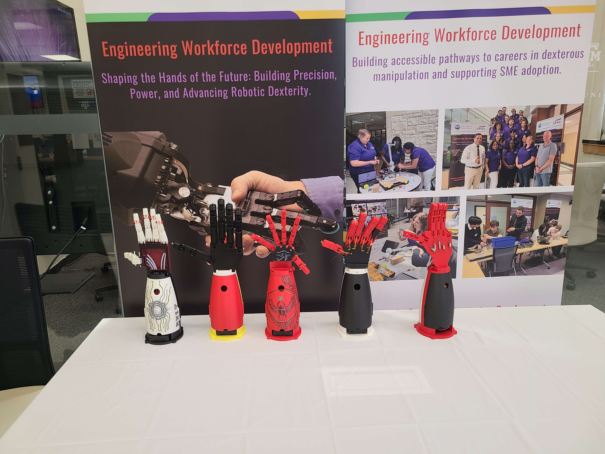

Research Experience for Teachers
Designed and taught a four-week curriculum guiding high-school teachers through building a five-DOF tendon-driven robotic hand.

[Final RET Hands Produced After 4 Weeks]
Motivation
The HAND ERC's Research Experience for Teachers program brings high-school educators into the lab to experience engineering research firsthand, with the goal of the teachers designing their own curriculum from what they learned to share with their students. The challenge was designing a curriculum that could take teachers with little to no prior engineering experience from zero to a working robotic hand in four weeks.
Approach
I designed and taught four weeks of hands-on curriculum for six high-school teachers, covering:
- CAD fundamentals: modeling parts and assemblies for a simplified five-DOF hand
- C++/Arduino programming: servo control, sensor reading, and basic logic
- Basic circuits: breadboarding, power distribution, and wiring
- 3D-printing design constraints: tolerances, overhangs, and print orientation
- Tendon-driven robot design: routing tendons, managing friction, and joint coupling
[Close up of final RET hand]]
Outcome
Every teacher independently designed, assembled, and programmed a working five-DOF tendon-driven robotic hand. Most of the teachers had little or no prior engineering experience, some not having any CAD or programming experience at all. The program demonstrated that complex robotic systems can be made accessible through thoughtful curriculum design and hands-on learning, and several teachers expressed interest in adapting the material for their own high-school classes.